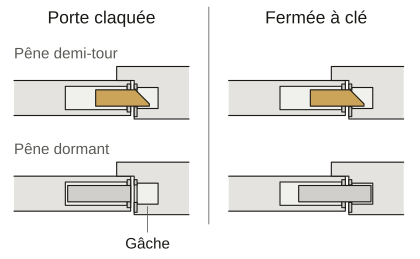

- Accueil
- Guides de serrurerie
- Porte claquée : que faire
Porte claquée : que faire et ce qu’il vaut mieux ne pas tenter
Porte claquée et clés dedans : cherchez d’abord un double auprès d’un voisin, du gardien ou d’un proche. Si vous louez, demandez à l’agence.
Sans double, ne forcez rien et demandez ses prix au serrurier avant son départ. Un enfant enfermé ou une casserole sur le feu : le 18 ou le 112.
Claquée ou fermée à clé : ce qui retient votre porte
Une porte claquée, c’est une porte tirée derrière soi sans tour de clé. Seul le pêne demi-tour la retient.
C’est la languette en biseau qui rentre quand on pousse la porte puis ressort dans la gâche, la plaque de métal creusée dans le cadre.
Une porte fermée à clé, c’est autre chose. Le tour de clé a fait sortir le pêne dormant, un pêne carré qui ne rentre qu’avec la clé.
Sur une serrure trois points, il a aussi verrouillé la porte en haut et en bas. Chaque point fermé ajoute du travail.
Attention aux serrures dites automatiques : elles se verrouillent seules quand la porte se ferme. Claquée, la porte est alors fermée à clé.
Vous ne savez plus si vous avez donné un tour ? Dites-le simplement au téléphone.

Avant d’appeler qui que ce soit
- Faites le tour des doubles : voisin ou gardien, famille ou colocataire. Si vous louez, l’agence ou le propriétaire en garde parfois un.
- Regardez si la porte du garage ou du jardin est restée ouverte.
- Votre assurance habitation a une assistance dépannage ? Appelez-la avant tout serrurier : elle peut payer l’ouverture, avec franchise et plafond.
- Clé restée côté intérieur ? Le double entre mais ne tourne pas, sauf avec un cylindre (la pièce où entre la clé) dit débrayable. Essayez sans forcer.
- Un double arrive demain et vous pouvez dormir ailleurs ? Attendez : la DGCCRF déconseille de décider dans l’urgence.
Ce qu’il vaut mieux ne pas tenter et pourquoi
- Forcer la porte à l’épaule ou au pied. La gâche peut s’arracher du cadre et le bois se fendre. La porte ne fermera plus ce soir.
- Glisser une carte ou une radiographie entre la porte et le cadre. On abîme souvent pour rien le joint et le chant de la porte (son bord).
- Percer ou démonter le cylindre. L’ouverture devient un remplacement de cylindre et la porte ne ferme plus à clé en attendant.
- Passer par une fenêtre ou par le balcon d’un voisin. Le vrai risque est la chute, pas la porte.
- Casser une vitre. Il faudra un vitrier en plus du serrurier et le logement restera ouvert cette nuit.
- Appeler le numéro d’un magnet ou d’un prospectus du hall. La DGCCRF le déconseille : ils imitent souvent un service public.
Porte blindée : encore moins de raisons de forcer
Une porte blindée est faite pour résister. Une tentative ratée peut abîmer le joint, la serrure ou le blindage. Le serrurier devra tout réparer sur devis.
Pour ces portes, cherchez un double ou appelez directement.
Le moment d’appeler et ce qu’il faut demander
Un enfant seul ou une personne fragile enfermée, une casserole sur le feu : appelez d’abord le 18 ou le 112, gratuits.
Sans double et sans assistance, appelez un serrurier. Il doit vous communiquer ses prix « préalablement à la conclusion d’un contrat ».
C’est l’arrêté du 24 janvier 2017 (article 2). Il vise le taux horaire et les forfaits, les frais de déplacement et le devis gratuit ou payant.
La DGCCRF conseille de les exiger avant son départ, pas devant la porte.
Sur place, il vous remet un devis écrit et détaillé : il est obligatoire dès le premier euro (article 4). Rien ne commence sans votre accord.
Porte claquée : vos autres questions
Peut-on ouvrir une porte claquée avec une radio ?
On ne la décrit pas : elle ouvrirait aussi la porte des voisins. Elle ne marche que sans tour de clé et abîme souvent le joint pour rien.
Les pompiers ouvrent-ils une porte claquée ?
Si quelqu’un est en danger (un enfant seul ou une personne âgée tombée), appelez le 18. Une simple porte claquée ne relève pas d’eux.
Comment éviter que ça recommence ?
Laissez un double chez un voisin ou un proche de confiance, pas sous le paillasson. Et sortez clés en main avant de tirer la porte.
Combien coûte l’ouverture d’une porte claquée ?
À partir de 75 € TTC en journée, déplacement compris, pour une porte claquée. Si vous refusez le devis : 75 € TTC, 95 € la nuit.
Je suis locataire : qui paie ?
C’est vous, qui demandez l’ouverture. Une pièce à changer est pour vous ou le propriétaire selon la cause : prévenez-le.
Sources
- Service-public.gouv.fr, « Quels sont les numéros en cas d’urgence (Samu, pompiers...) », vérifié le 25 août 2026, lu le 26 octobre 2026
- Service-public.gouv.fr, « Dépannage à domicile », vérifié le 25 mars 2025, lu le 26 octobre 2026
- Légifrance, arrêté du 24 janvier 2017 relatif à la publicité des prix des prestations de dépannage, articles 2 et 4, lu le 26 octobre 2026
- DGCCRF, « Plomberie, serrurerie, chauffage… choisir le bon professionnel pour un dépannage à domicile », 1er juillet 2025, lu le 26 octobre 2026
- Légifrance, loi n° 89-462 du 6 juillet 1989, articles 6 et 7, lu le 26 octobre 2026